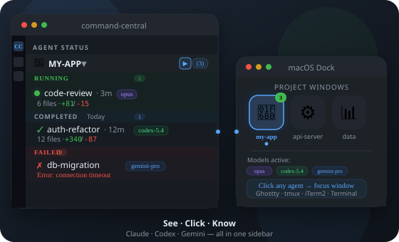
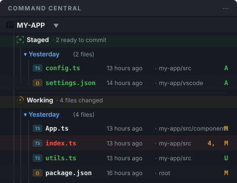
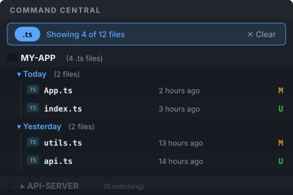
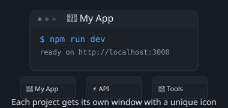
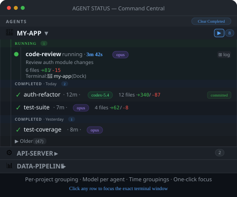
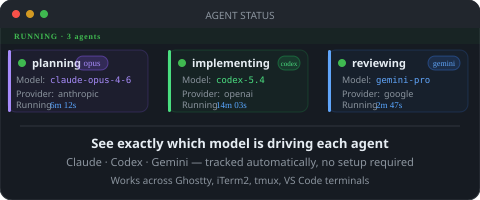
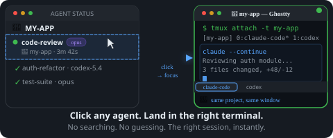

Recent Changes
See recent changes first
Code that changed minutes ago appears above code that changed yesterday.

Command Central auto-discovers Claude, Codex, and Gemini agents across all your terminals — and puts them in one VS Code sidebar.
1160+ tests in suite. MIT licensed. Built by developers who run 10 agents daily.

Why it matters
Command Central keeps change history, Git state, project windows, and AI coding activity visible in one place so you spend less time hunting for context.
Code that changed minutes ago appears above code that changed yesterday.
Toggle to separate files you've staged from files still being worked on.

Filter by file type to see only JavaScript, CSS, or whatever you're working on.

Launch a terminal for each project. Each gets a unique emoji icon so you can tell them apart.

Running, completed, and failed agents grouped by project. Status, model, duration, and diff counts — all visible without leaving VS Code.

Each agent shows its model inline — opus, codex-5.4, gemini-pro. No guessing which backend is running what.

Command Central routes you directly to the correct tmux window or terminal tab. No hunting, no guessing — the right session, instantly.

How it works
Install once. Open the sidebar. Agents appear. No build step, no session naming ritual.
See — agents auto-discovered
Command Central finds Claude, Codex, and Gemini agents running anywhere — Ghostty, iTerm2, tmux, VS Code terminals. No setup required.
Click — focus the right terminal
Click any agent row in the sidebar to jump directly to its terminal window or tmux pane. The right session, instantly.
Know — model, duration, diff
Each agent shows its model, how long it has been running, and a live diff count. Stale agents are flagged automatically.
Comparison
The wedge is simple: Command Central sees external terminal agents that native VS Code tooling and terminal multiplexers do not unify inside the editor.
| Capability | Command Central | VS Code Agent Sessions | dmux / cmux | FleetCode |
|---|---|---|---|---|
| See agents running in external terminals | ✅ Yes | ❌ No | ⚠️ In terminal only | ❌ No |
| Unified VS Code sidebar for Claude, Codex, and Gemini | ✅ Yes | ⚠️ Native sessions only | ❌ No | ⚠️ Product-specific |
| Kill, restart, and open output from the sidebar | ✅ Built in | ⚠️ Limited to native flow | ❌ Terminal commands | ⚠️ Limited |
| Per-agent diff viewer and per-file +/- counts | ✅ Built in | ❌ No | ❌ No | ❌ No |
| Prompt display and stuck-session detection | ✅ Yes | ⚠️ Partial | ❌ No | ❌ No |
| Best fit | Agent-heavy developers managing many sessions at once | Single-editor native agent workflows | Terminal-first multiplexing | Separate agent product workflow |
Install
Single extension install. Static landing page. No new build tooling. Your existing terminal workflow stays intact.
code --install-extension oste.command-central
Latest release
Every agent now shows its model alias inline — opus, codex-5.4, gemini-pro. Stale launcher tasks are automatically reaped. Archive, collapse, and Clear Completed shipped in the same v0.5.1 line.
Latest: v0.5.1-54 on April 2, 2026. One email per release. Product updates only.
Or star the repo for updates.